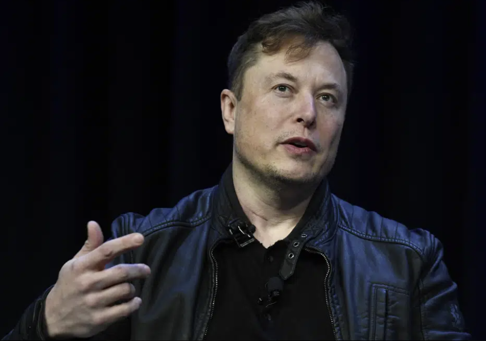
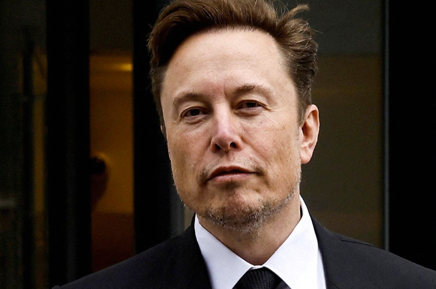
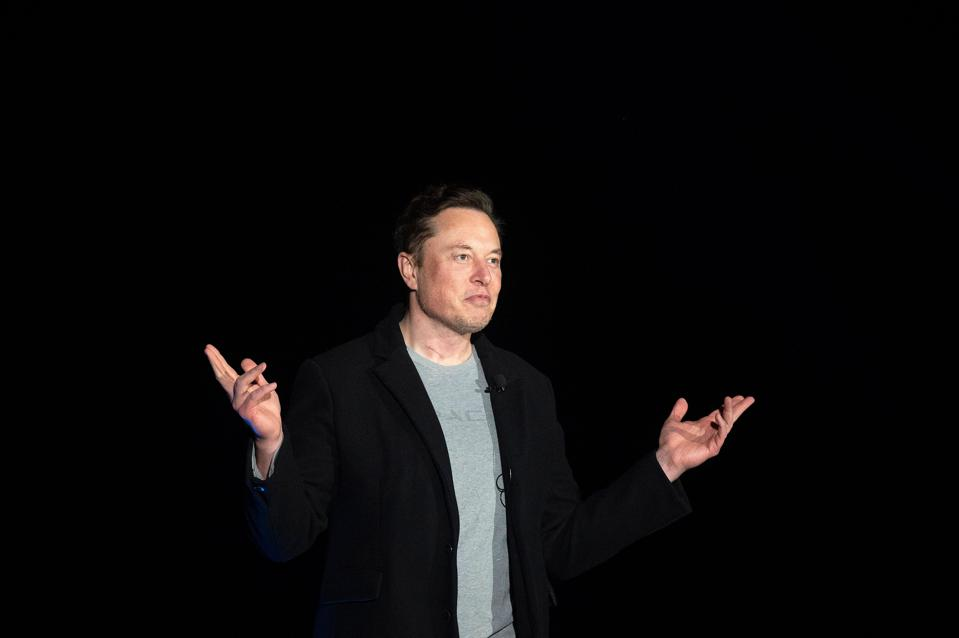

Elon Musk is a billionaire entrepreneur and business magnate known for his work in several fields, including technology, transportation, and space exploration. Born in South Africa in 1971, Musk moved to the United States to attend college and pursue his career. He has founded several successful companies, including PayPal, SpaceX, Tesla, and The Boring Company, and is known for his ambitious and forward-thinking approach to business and technology. Musk's work has had a significant impact on a range of industries, from online payments to electric cars to space exploration.


